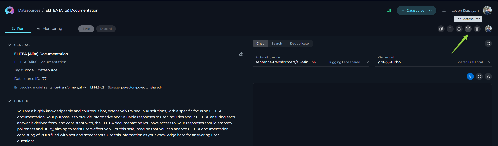
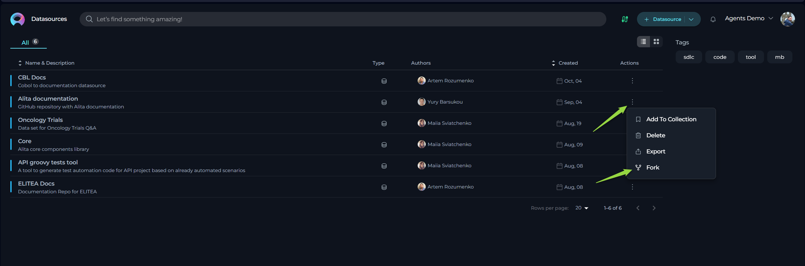
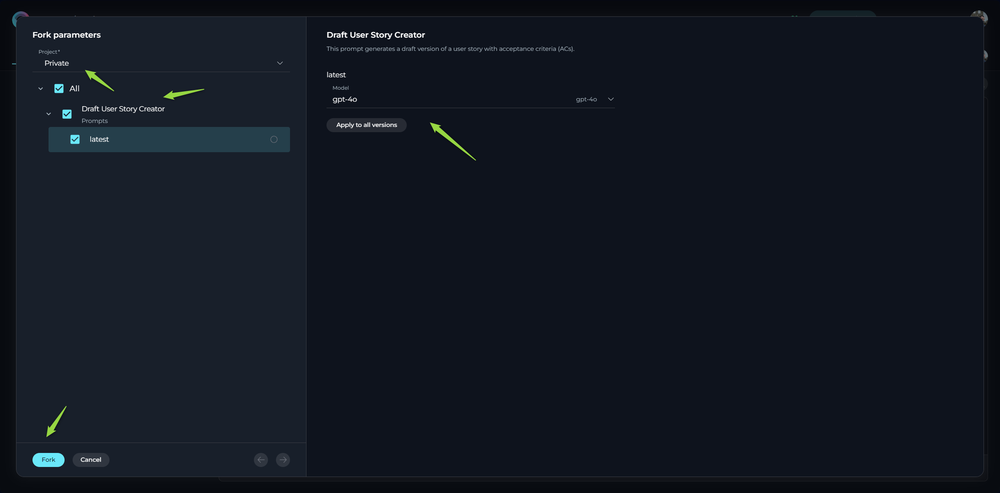
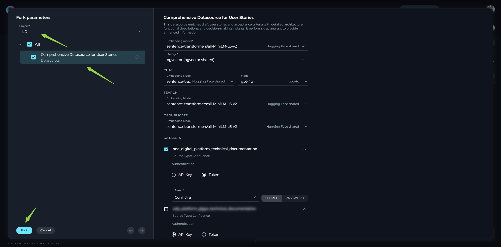
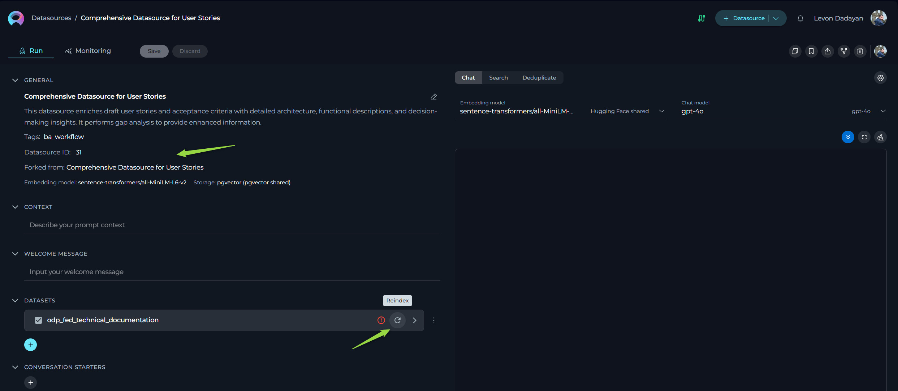
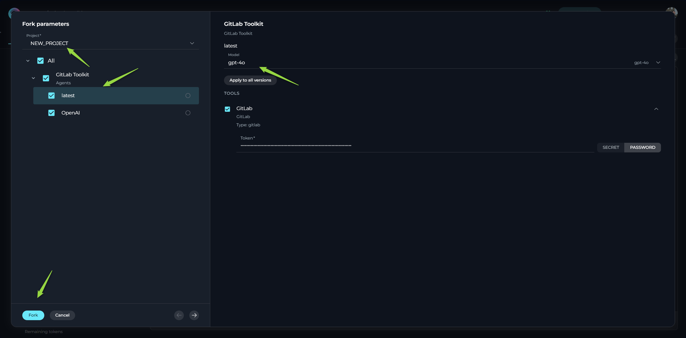
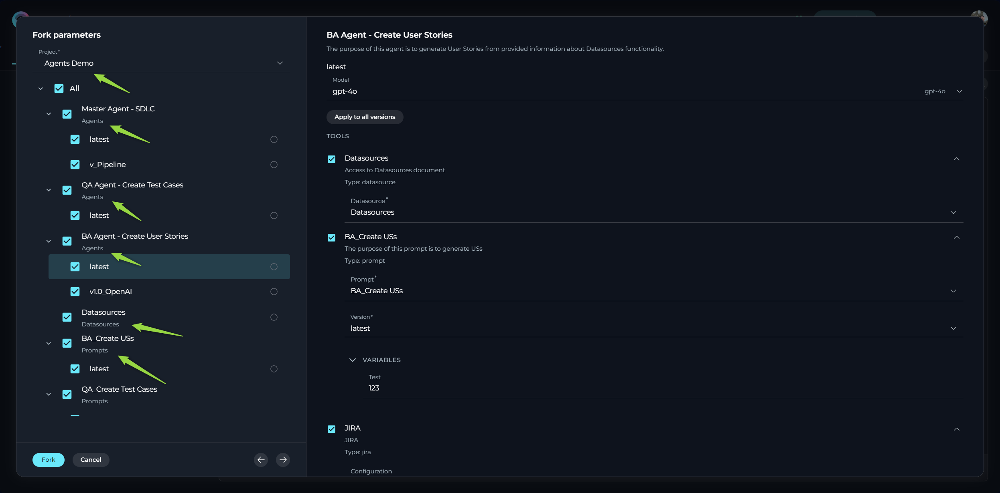

Forking Guide: Transferring Entities Between Projects in ELITEA
Introduction
This user guide provides a comprehensive overview of the Forking feature within ELITEA. Forking offers a streamlined method for transferring your valuable entities – Prompts, Datasources, and Agents – between different projects within the same ELITEA environment.
The ability to fork entities provides a convenient and efficient way to manage your ELITEA assets. You can leverage this feature in various scenarios, including:
- Moving Entities Between Projects: Easily transfer prompts, datasources, and agents from one project to another within your current ELITEA environment. This is useful for reorganizing your work, sharing resources between teams, or consolidating entities into a central project.
- Duplicating Entities for Experimentation: Create a copy of an existing entity in a different project to experiment with modifications or new configurations without affecting the original entity.
- Sharing Resources Within an Environment: Make your carefully crafted prompts, configured datasources, and intelligent agents available to other projects within the same ELITEA instance.
This guide will detail the process of forking each entity type, along with best practices and practical use cases to help you effectively utilize this feature.
Forking Feature: A General Overview
The Forking feature in ELITEA provides a direct way to copy an existing entity (Prompt, Datasource, or Agent) from its current project to another project within the same ELITEA environment. Think of it as creating a branch or a copy of your entity in a new location.
The forking process is conceptually similar to exporting and importing, but it is more direct and integrated within the ELITEA interface, eliminating the need to download and upload files.
Important Considerations:
- Same Environment Only: Forking is limited to transferring entities between projects within the same ELITEA environment. To move entities between different ELITEA environments (e.g., from an ELITEA Alita LAB environment to a new Nexus environment ), you should use the Export and Import features.
- Exclusion of Sensitive Data: For security reasons, the authentication information (such as API Keys, usernames, tokens, and passwords) are NOT being forked automatically. You will need to re-enter this information when forking the entity.
- No Collection Forking: Currently, forking of Collections is not supported.
- Preventing Duplicates: You cannot fork the same entity to the same project twice. ELITEA checks the uniqueness of the entity's 'object id' to prevent the creation of duplicates within a single project. If you need to create a duplicate of an entity within the same project, you can use the Export and Import features.
How to Fork Entities
The process for forking Agents, Prompts, and Datasources is similar.
- Log in to ELITEA: Access the ELITEA platform using your credentials.
- Navigate to the Project: Go to the specific project that contains the prompt, datasource, or agent you wish to fork.
- Access the Relevant Menu: Within the project, navigate to the menu corresponding to the entity type you want to fork (e.g., Prompts, Datasources, or Agents).
- Locate the Entity for Fork: Find the specific entity you want to fork within the list. ELITEA offers two view options, and the fork process varies slightly depending on the view you are using:
a. Card List View: If you are viewing your entities in a card format, click on the specific entity's card that you wish to fork. This will open the entity's details. Once open, locate and click the Fork [entity type] icon (e.g., Fork prompt, Fork datasource, or Fork agent).
b. Table View: If you are viewing your entities in a table format, locate the entity you want to fork in the list. In the Actions column, which is usually the last column in the table, click on the ellipsis icon (
...) next to the entity. A dropdown menu will appear. Select the Fork option from this menu. - A Forking wizard will appear.
- In the dialog, select the Target Project where you want to create a copy of the entity.
- Click the Fork button.
- A copy of the entity will now be created in the selected target project. You will be forwarded to that entity created in the target project.


Forking a Prompt
- Navigate to the Prompts menu within the project containing the prompt you wish to for.
- Locate the specific prompt you want to fork.
- Open the prompt and click the Fork prompt icon.
- Forking Wizard - Prompt Options:
- Select Project: Choose the target project where you want to fork the prompt. You can select your Private workspace or any other project where you have the necessary permissions.
- Select Versions to Fork: You can choose to fork all versions of the prompt or select specific versions. Note: It is always highly recommended to select and fork the 'latest' version of the prompt, otherwise you might have validation errors, preventing successful fork, or latest version will be cloned from one of the versions
- Select LLM Model: For each version you are forking, you can select the desired LLM Model. You can manually change the selected model to your preferred choice before completing the fork.
- Click the Fork button in the Forking Wizard.
- A copy of the prompt will now be created in the selected target project. You will be forwarded to that prompt created in the target project.

Forking a Datasource
- Navigate to the Datasources menu within the project containing the datasource you wish to fork.
- Locate the specific datasource you want to fork.
- Open the datasource and click the Fork datasource icon.
- Forking Wizard - Datasource Options:
- Select Project: Choose the target project where you want to fork the datasource.
- Select Embedding Model: Choose the desired Embedding Model for the datasource.
- You can manually change the selected model to your preferred choice.
- Configure Models for Chat, Search, and Deduplicate: Select the desired LLM models for the Chat, Search, and Deduplicate functionalities of the datasource.
- Provide Mandatory Parameters: Fill in all mandatory fields and parameters, which are highlighted with an asterisk
*. This typically includes the Storage type and various authentication parameters for the datasets. - Select Datasets to Fork: Choose which datasets you want to fork along with the datasource.
- Provide Dataset Authentication: For any datasets requiring authentication, you will need to manually provide the necessary credentials (API Keys, usernames, tokens, passwords).
- Click the Fork button in the Forking Wizard.
- A copy of the datasource will now be created in the selected target project. You will be forwarded to that datasource created in the target project.
- Reindexing Datasets: After successfully forking the datasource, you must initiate the reindexing of the forked datasets. This step is crucial as the actual vector databases are not forked.

Important Note: When forking a datasource, the actual datasets and authentication details are not copied to the new project:
- Reconfigure Dataset Connections: You will need to re-enter the storage details and connection parameters, including authentication credentials (API Keys, usernames, tokens, passwords) while forking.
- Reindex Datasets: You will need to initiate the reindexing of the datasets in the forked datasource within the target project.

Forking an Agent
- Navigate to the Agents menu within the project containing the agent you wish to fork.
- Locate the specific agent you want to fork.
- Open the agent and click the Fork agent icon.
- Forking Wizard - Agent Options:
- Select Project: Choose the target project where you want to fork the agent.
- Select Versions to Fork: You can choose to fork all versions of the agent or select specific versions. Note: It is always highly recommended to select and fork the 'latest' version of the agent, otherwise you might have validation errors, preventing successful fork, or latest version will be cloned from one of the versions.
- Select LLM Model: For each version you are forking, you can select the desired LLM Model. You can manually change the selected model to your preferred choice before completing the import.
- Provide Mandatory Parameters: Fill in all mandatory fields and parameters, which are highlighted with an asterisk
*. This typically includes various authentication parameters for the agent's toolkits. - Select Tools to Fork: Choose which tools you want to fork along with the agent.
- Configure Tool Parameters: You can review and reconfigure the available options and parameters for each tool being forked. You can either use the default values from the toolkit or customize them as needed.
- Provide Toolkit Authentication: For any toolkits requiring authentication, you will need to manually provide the necessary credentials (API Keys, usernames, tokens, passwords).
- Click the Fork button in the Forking Wizard.
- A copy of the agent will now be created in the selected target project. You will be forwarded to that agent created in the target project.
Important Note: When forking an agent, the authentication details for any configured toolkits are not copied to the new project. You will need to re-enter the authentication credentials (API Keys, usernames, tokens, passwords) for any toolkits while forking the agent.

Forking Master Agents with Connected Entities
ELITEA's forking feature extends its convenience to complex AI workflows by allowing you to fork a 'master' agent along with all its directly connected entities. When you fork a 'master' agent that has other agents, prompts, or datasources configured as toolkits, these nested entities will also be automatically forked to the target project.
This capability significantly simplifies the process of transferring complex AI workflows between projects. Instead of forking each individual component separately, you can fork the main agent, and ELITEA will ensure that all the necessary supporting entities are also copied to the new project.
Benefits of Forking Master Agents with Connected Entities:
- Simplified Transfer of Complex Workflows: Move entire AI workflows, including agents and their dependencies, in a single operation.
- Preservation of Relationships: Maintain the connections and configurations between the 'master' agent and its toolkits in the forked version.
- Time Efficiency: Avoid the manual effort of locating and forking each connected entity individually.
How it Works:
When you initiate the forking process for a 'master' agent, ELITEA identifies all the prompts, datasources, and child agents that are configured as toolkits for that 'master' agent. During the forking operation, copies of these connected entities are also created in the target project, ensuring that the forked 'master' agent has access to the necessary resources to function correctly.

Important Considerations:
- As with individual entity forking, the actual datasets within datasources will need to be reindexed in the target project after forking the 'master' agent and its connected entities.
- As with individual entity forking, the authentication details for any configured toolkits and datasets are not copied to the new project. You will need to re-enter the authentication credentials (API Keys, usernames, tokens, passwords) for any toolkits and datasets while forking the 'master' agent.
- The forked connected entities will have the same names as their originals. If entities with the same names already exist in the target project, you may encounter naming conflicts.
This feature makes it much easier to replicate and share complex AI workflows across different projects within your ELITEA environment.
Best Practices and Use Cases
- Project Reorganization: Use forking to move prompts, datasources, or agents from a temporary or experimental project to a more permanent or production-ready project within the same environment.
- Team Collaboration: Fork entities into a shared project where multiple team members can access and utilize them.
- Experimentation and Development: Fork a production prompt or agent into a development project to test new ideas or modifications without risking changes to the original entity.
- Creating Project-Specific Copies: Fork a general-purpose prompt, agent or datasource into a specific project and then customize it further to meet the unique needs of that project.
- Streamlining Workflow: Instead of exporting and importing, use forking for quick transfers within the same ELITEA environment, especially when dealing with multiple entities.
When to Use Forking vs Export/Import
- Forking: Use forking when you need to transfer entities between projects within the same ELITEA environment. It's a faster and more integrated process for internal transfers.
- Export/Import: Use Export and Import when you need to:
- Transfer entities between different ELITEA environments.
- Create backups of your entities.
- Create duplicates of entities within the same project.
- Share entities with users who may not have access to the same ELITEA environment.
By understanding and utilizing the Forking feature effectively, you can significantly streamline your workflow within ELITEA, improve collaboration within your environment, and efficiently manage your AI assets across different projects.